9383342624358434
- 品种名称：
裕和堂专供3年陈艾条
- 产地：
湖北蕲春
- 收货时间：
2023年6月
- 储存方式：
密闭、阴凉干燥处
- 储存地址：
湖北省黄冈市竹瓦镇裕和堂艾草基地
- 打绒日期：
2026年6月
- 加工工艺：
三遍打绒
- 储存方法：
密闭、阴凉干燥处
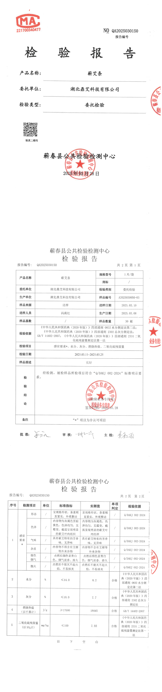
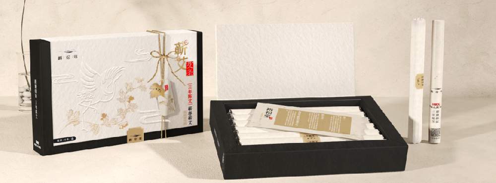
艾条生产
- 产品名称：
裕和堂专供3年陈艾条
- 等级：
三年陈
- 产地：
湖北蕲春
- 执行标准：
Q/DAKJ002-2024
- 生产日期：
见包装外盒处
- 储存方法：
密闭、阴凉干燥处
- 生产许可证编号：
SC10142102450041
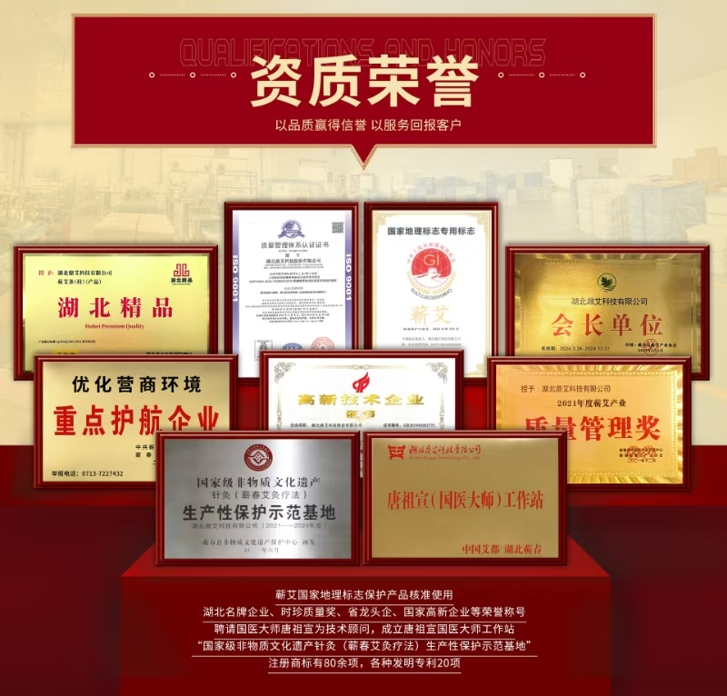
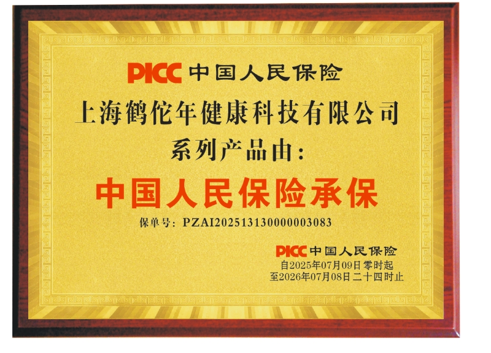
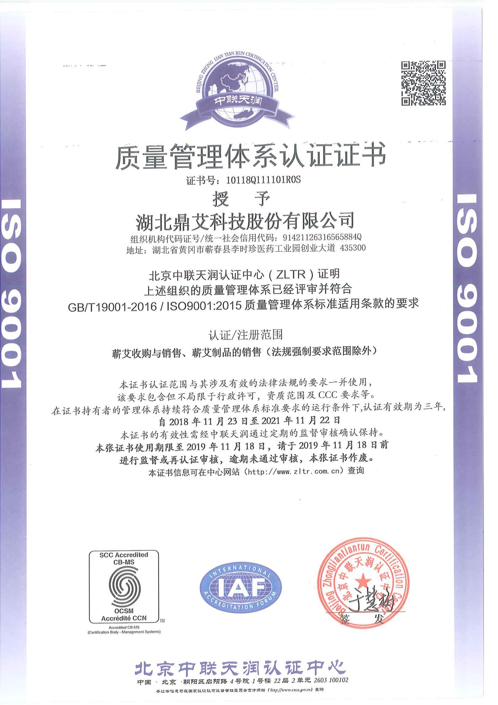
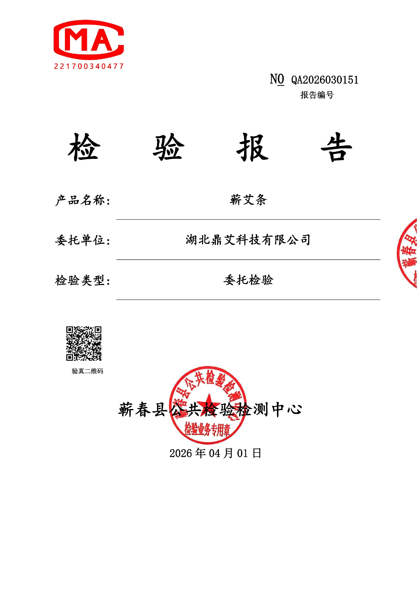
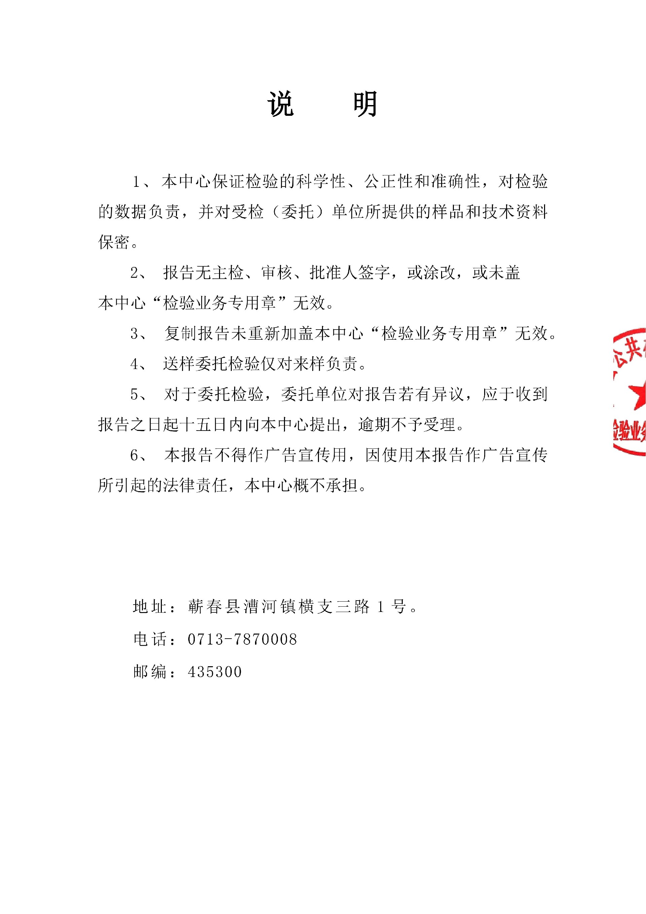
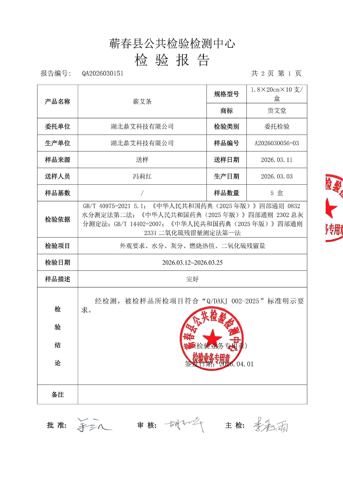
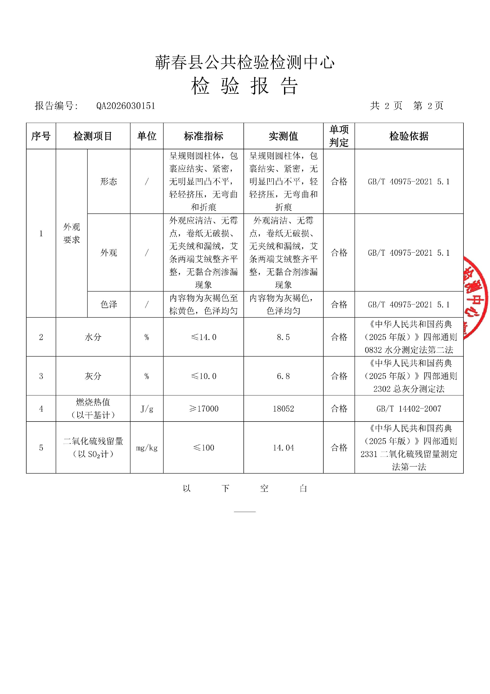
艾条产品使用说明
使用必读
一、安全注意事项
• 艾灸前应确认自身身体状况：孕妇腰腹部、皮肤破损处、高热及急性病发作期、经量过多者、皮肤溃烂伴急症红肿热痛者严禁艾灸；过敏体质者需先在耳后进行小范围试用，无异常反应后方可使用；建议饭后 1 小时进行操作，备好红糖水以防晕灸。
• 应选择通风良好、无易燃物的环境，远离火源，并配备灭火器材（如湿毛巾、灭火器等）。
• 艾灸时需保持清醒状态，禁止躺卧或睡眠中操作，严禁无人看管，以防艾条掉落引发火灾；若不慎掉落艾灰，皮肤未出现变色且再次艾灸无灼痛感，通常不会产生水泡。
• 艾条与皮肤的距离应控制在 3-5 厘米，以皮肤感觉温热无灼痛为宜，每处穴位艾灸时间不超过 15 分钟，单次艾灸总时长不超过 40 分钟，每周艾灸次数不超过 3-4 次，避免发生烫伤或因过度艾灸导致身体不适。
• 优先选择四肢、腰背部等肌肉丰厚部位进行艾灸，避开眼、鼻、口唇等黏膜部位及大血管分布区域。
• 儿童、老年人及行动不便者需在他人协助下进行艾灸，且全程需有人监护，防止发生意外。
• 艾灸后半小时内避免接触冷水、冷风，2 小时后可洗澡，但应避免贪风受凉；多饮用温水以促进代谢。
• 艾灰需待完全冷却后，倒入密封容器内处理，严禁随意丢弃在易燃物上。
二、烫伤处理
• 若局部出现轻微灼痛、发红，可涂抹烫伤膏或芦荟胶；出现水泡时禁止撕除表皮。
• 小水泡（直径＜0.5 厘米）：保持局部清洁干燥，使其自然愈合。
• 大水泡（直径＞0.5 厘米）：先用碘伏对局部皮肤及周围进行消毒，再用无菌针头从水泡边缘轻轻刺破放出液体，随后用无菌纱布覆盖保护，每日更换纱布直至创面愈合。
• 出现灸花（表现为轻微潮红、小丘疹）：无明显不适者无需特殊处理，若伴随瘙痒，可涂抹温和的止痒药膏，禁止使用刺激性洗护用品。
• 若局部出现红肿加剧、疼痛加重、流脓等感染迹象，或气泡、灸花长期不愈合，应立即停止艾灸，并及时就医。
艾条使用说明
一、八大黄金穴位速查
• 中脘：位于脐上 4 寸（约自身五指并拢横宽），具有健脾益胃的功效，餐后 1 小时艾灸，可缓解腹胀及消化不良症状。
• 神阙：位于肚脐正中央，可起培元固本的作用。
• 关元：位于脐下 3 寸（约四横指宽），可温肾暖宫，下焦虚寒者重点艾灸，可驱散宫寒。
• 足三里：位于外膝眼下 3 寸，胫骨旁 1 横指处，具有强身防病的功效，是老人及儿童保健的必灸穴位。
• 三阴交：位于内踝尖上 3 寸，胫骨内侧后缘，能滋阴调经，经期前艾灸可缓解痛经，适合阴虚体质者。
• 涌泉：位于足底前 1/3 凹陷处，可引火归元，上火时艾灸 10 分钟，能起到降虚火的作用。
• 肩髃：位于手臂外展时肩峰前下方凹陷处，能通络止痛，肩周炎患者可配合回旋灸扫散痛点。
• 曲池：位于屈肘时肘横纹外侧端，具有清热解表的功效，感冒初期艾灸可帮助退热。
二、手持艾灸四式操作法（附防烫技巧）
1. 基础准备
防护：佩戴一次性 PE 手套，以防烟油染色；准备金属罐承接艾灰，居家时可用竹筷替代刮灰板。
点火：撕去艾条外包装纸，点燃端头并吹至暗红无明火状态。
控温：以手背试温，艾条与皮肤距离保持在 3-5cm，以感觉温热无灼痛为适宜距离。
时间控制：单穴艾灸时间≤15 分钟，单次总时长≤1 小时；阴虚体质者时间减半。
1. 手法及操作要点
定灸法：将艾条悬停于穴位正上方保持不动，可实现精准补益。
回旋灸：以穴位为中心，顺时针画苹果大小的圆圈（半径＜5cm），适用于腹部、肩背等大面积区域。
雀啄灸：如鸟啄食般上下快速均匀升降（幅度 2-3cm），适用于关节缝深部寒痛部位（如肩髃，关节类不适或腰部无法直接艾灸时，可在腹部中脘、关元、神阙处施用，热力可渗透至腰部）。
◦ 尾摆灸：沿酸胀条索状部位（如肩→肘），慢速随经络摆动，适用于经络淤堵情况。
三、增效搭配建议
• 虚寒体质：艾灸神阙 + 关元 + 足三里，每周 3 次，可提升阳气。
• 肩颈劳损：肩髃采用雀啄灸 + 曲池采用循摆灸，配合鹤佗年昼夜贴热敷大椎穴，可加快散瘀。
• 上热下寒：涌泉定灸 10 分钟 + 三阴交回旋灸，能引火下行。
操作口诀：“穴准不过三，温透不烫皮；时长宁不足，莫贪一时暖”—— 此为安全艾灸核心准则。
四时艾灸，鹤佗年传承岐黄千年智慧！
上海裕和堂中医养生简介
上海“裕和堂”创立于2009年，专注中医养生保健领域。 秉承传统中医理念，凝聚精湛技艺团队，在雅致古韵的环境中提供专业服务，让客户切身感受中医理疗卓效。目前在上海核心商圈拥有 9家直营五星门店（均为大众点评五星），累计收获上万条五星好评，深受包括运动员、明星在内的众多顾客青睐。自2011年深耕艾灸项目以来，稳居行业领先地位，每逢三伏天，艾灸顾客络绎不绝。
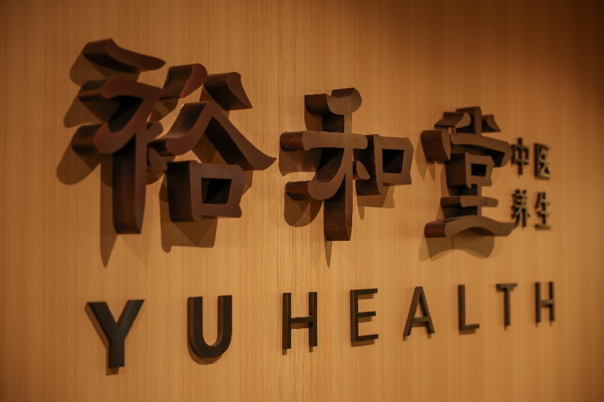
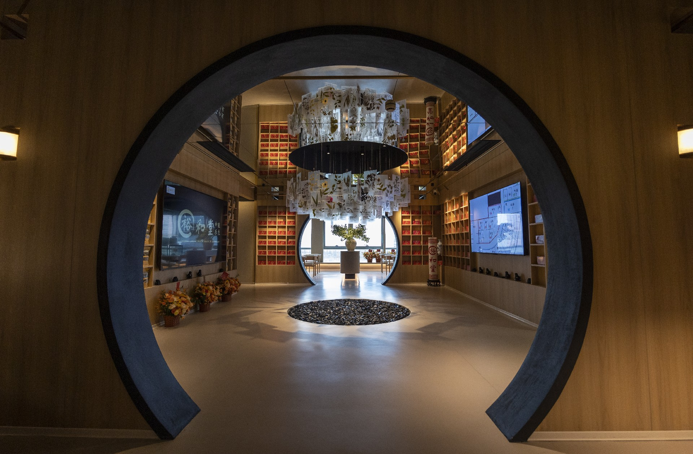
裕和堂艾草基地介绍
创始人汤伏平深知，艾灸功效之本，在于调理师技术与艾条品质的双重精粹。 《本草纲目》明载：“艾以蕲州者为胜”，且陈艾三年，药性更醇、挥发油更丰。为确保顾客所用皆为道地三年陈蕲艾，汤伏平决心深耕品质：2017年，于医圣故里蕲春自建裕和堂蕲艾种植基地，配套专属仓库保障艾草足期陈放三年，并设自有生产线严控每根艾条克重均匀。从种植、陈化到加工，全产业链坚守品控。 每年端午，更组织裕和家人共赴蕲春亲采艾草，传承灸道文化。
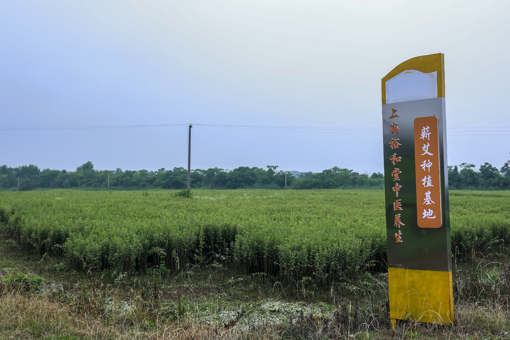
实时监控画面请通过产品包装溯源码查询，或联系客服获取最新监控入口。